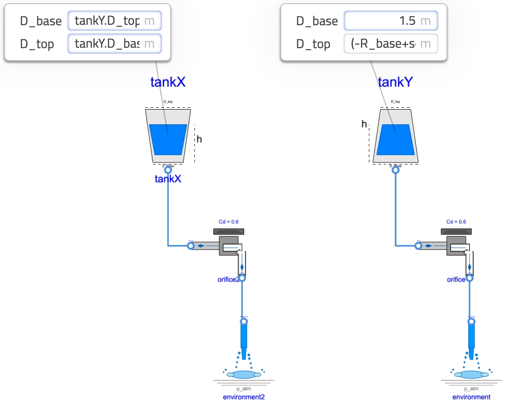
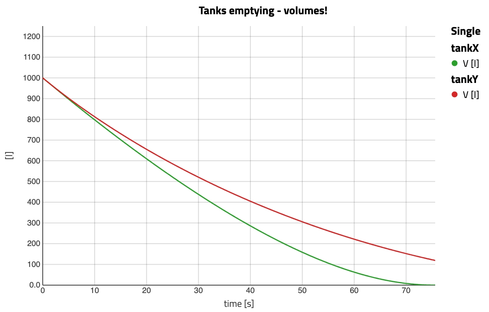
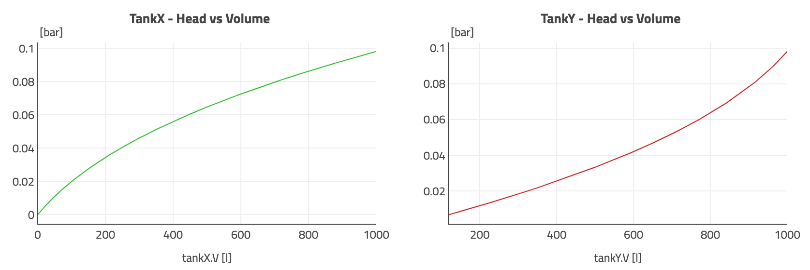

The need for dynamic simulation

I hope you’ve got your preferred drink in hand ☕️🫖💧
📬 📰 Saturday editions - for having more time to read during the weekend! Let’s experiment for a few weeks. Let me know if this is not a convenient day (❓).
I guess you might have seen this image with the two tanks below. You might know the answer. Bear with me, I hope to bring a different twist to this problem.

LinkedIn has been on fire this week with this problem to solve. I am usually not putting too much attention on these, and this time is a bit different.
A first (wrong) solution
There were so many posts stating that both tanks would empty at the same time, because the height of both tanks is the same.
But first, not everyone knows hydraulics (or remember it) so let me explain quickly this statement: the pressure under water is due to the “column of water” (basically the height of water) above the point at which you want to know the pressure. So if you swim above water, you just get the atmospheric pressure and, as soon as you dive, you start getting more pressure induced by the water above you. The deeper you dive, the more pressure applies on your body.
So, the (wrong) argumentation goes:
- the same height of the tank, the same pressure at the bottom!
- And the same pressure at the bottom, the same amount of water flows through the valve.
- So they empty in the same amount of time? 🧐
Well, no. The first two points are correct, and the conclusion in 3. is wrong.
Why?
Because this only considers the initial conditions of the problem. What about the dynamics of the system?
A second (correct) solution
Note: this entire article uses volume flow rate and not mass flow rate. These are in this case equivalent because the temperature is considered constant and the pressure at the ports is the same. It is just more intuitive to discuss volumes and volume flow rate than masses of fluid and mass flow rates.
An intuitive next step
So 1. and 2. above are correct. After a short amount of time, the same amount of flow would have gone through both valves, right? Let’s remind ourselves that the flow is actually here a volume flow rate V_flow, and is expressed in unit [m^3/s]. And when we consider a volume flow rate over time [s], this means that we are looking at the volume of water [m^3] that left the tank.
V_flow * Δt = V
# which is consistent with the unit check
# [m^3/s] * [s] = [m^3]Ok, so the same volume of water exits both tanks in the first short amount of time. So the same volume remains on both tanks. Now you see me coming:
- the same volume remains on both tanks,
- the two tanks have different shapes,
- In Tank X (with smaller base and larger top), the remaining volume of fluid will lead to a higher remaining column of fluid than in Tank Y. And this is because the larger top will mean less change of height is needed for covering a given volume.
- And so after the first “small amount of time”, the height in both tanks will differ.
- And if the heights differ, so do the pressures at the bottom.
- And if the pressures at the bottom of the tanks differ, so do the flow through the valves.
- And thus already on the next “small amount of time”, the volume in both tanks will differ.
Oh, so after two “small amounts of time” later, we already see a difference in behavior. And if one applies the logic of the “first (wrong) solution” at this point, then one would already have a different answer. So the real solution will appear once we continue with “small amount of time” later until we empty the tanks!
A “small amount of time” later
Intuitively, we discussed that: 1. At a point in time, the behavior of a system can be studied. 2. A small amount of time later, we can assess a new “point in time”. 3. and we loop over 1. and 2. over and over again.
Well that, Ladies and Gentlemen, is exactly what dynamic simulation does! 😉 Let’s make the analogy clearer:
- We can decompose a bit 1. by highlighting that a subset of the variables of our system can define fully the
stateof our system - these are thestate variables(called oftenstates) -, and the other variables can be computed from thestates. - The simulation
solverdoes compute thestatesafter a smalltime step- which is the “small amount of time” later. - and when we simulate, we define a
final timeof simulation or conditions to stop the simulation.
So we can model and simulate this problem!
Until the last drop
Obviously, it is not enough to just trust this intuitive reasoning and one could easily wonder whether there is a later point where “things go south”. Spoiler: the trend continues because the shapes - volume versus height - are linearly evolving. Said differently, the pressure will be higher for a larger fraction of the volume. So let’s simulate this problem until the last drop is out of one tank!
First, we need the right components:
- a
Reservoirthat is parametrized based on the truncated conical shape, - an
Orificewhich models the faucet, and - the
Environmentwhich basically is the constant atmospheric pressure and can receive as much flow as needed.
The reservoir is obviously the most specific to this problem. Let’s look at the main equations and jump into the simulation part:
1. port.p = p_atm + p_hyd;
2. p_hyd = rho*g_n*h "Pressure head";
3. der(V) = port.V_flow;
4. V = pi * h / 3 * (R_base^2 + R_base * R_surface + R_surface^2);
5. R_surface = R_base + k_geom * h;
6. k_geom = (R_top - R_base)/H_tank ;Not to fill too much the equation block, I pull the explanation of each line out of the block:
- The port being at the bottom its pressure is the sum of the air and fluid pressure.
- Head induced pressure, i.e. induced by the mass of the fluid above the port.
- The reduction of volume is the flow that leaves the tank.
- The volume of the truncated conical shape is based on the height (in R_surface), and base and top radii.
- The radius at the surface of water is function of the height, and the shape.
- The shape of the cone can be modeled by one base radius and the slope in change of radii.
So what is important to see here is that the physics modeled takes into account the head as a function of the height of fluid, which itself is function of the volume of fluid remaining and the shape of the tank.
Let’s simulate this! We build two configurations as per the image.

Ok, the icons are ugly… but that’s not the point! I have other priorities in life 😅 As you see, the dimension of tankX are set to the flipped dimensions of tankY.
So now we can look at the behavior and the answer you want to see is “which one empties first?”, let’s plot the level of fluid against time:

This is exactly what we expected: tankX level stays higher longer than tankY and therefore has more head over time (head is linear with height remember), so empties faster overall.
But why is it counter intuitive when seeing this curve? Well, it seems that tankY was ahead of tankX but that was only an illusion! We are looking at the height, and instead we can look at the remaining volume of fluid. Let’s change perspective:

It is clear that, from just after the start, the remaining volume of water in tankX is lower than tankY. So tankX was ahead all the time!
A good analogy just came to mind: you know how when you look at an athletic runner race on a track 🏃♀️🏃🏃♂️, it always seems that the one more inside the track is behind - they start behind actually - but catch up during the curve because their remaining path along the curvature is shorter. Same thing here: there is less volume to outflow for a given height of tankX.
Finally, a nice summary plot is to look at the head pressure at the bottom of each tank as a function of the remaining volume of fluid.

What about different dimensions of the cone
The reflection in all the above was done without dimensions so the reasoning stands. Nevertheless, all the simulations were done for one set of conditions: a volume of 1000L, a height of 1m and the base diameter of tankY being 1.5m (respectively the top diameter of tankX).
Because it is easy to simulate, we can close this article by playing around with the based diameter of tankY. A quick solving shows that if the diameter D_base is around ~1.15m then we have a cylinder and not a cone. And if we have a D_base above ~1.95m then even a D_top of 0 would lead to more than 1000L of water. Hence, we can explore a design of D_base between 1.2 and 1.9m.

We see clearly that, from two nearly cylindrical cones (hence nearly identical responses), to the more complete cone (when D_base gets larger, D_top reduces to host the same volume of 1000L), then the trend is unchanged: tankX always empties faster - for the same reason as explained above.
The END for today
Enough for today.
I hope you enjoyed digging into this puzzle and seeing that the reasoning steps where basically our brains doing dynamic simulation 😉!
Break is over, go back to what you were doing.
Clément
Next ->
© 2025 Clément Coïc — Licensed under creative commons 4.0. Non-commercial use only.